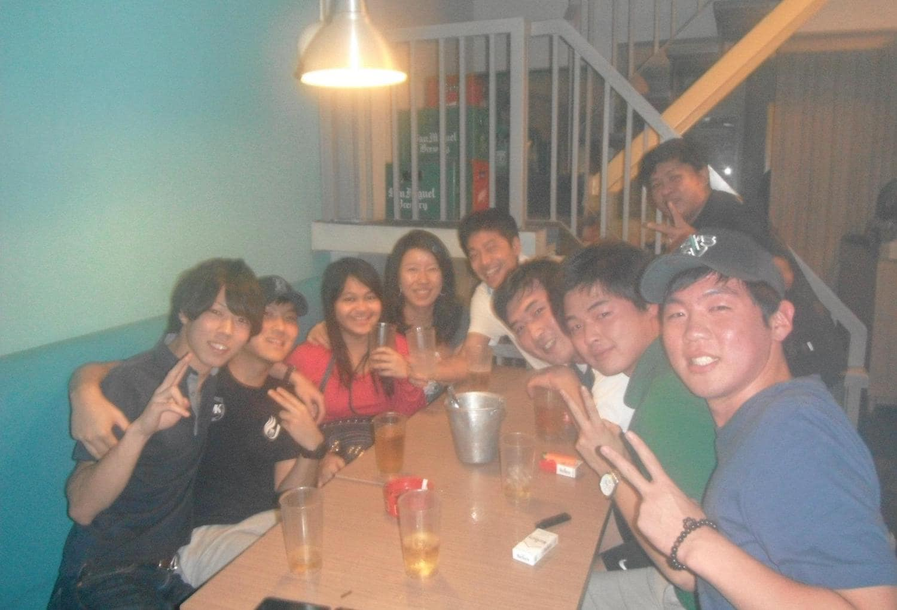

英語を「約１年」ほど、ガチで学んでみた結果【ヒント：完全無料です】

こんにちは、yuudaiです。
Twitter上での「拡散データ」がこちら
本記事で「僕のノウハウ」を全て書きます。
とはいえ、圧倒的に「シンプルな方法」なので、驚くはず。
※補足：僕は英語の「専門家」でもないし、英語の「プロ」でもありません。しかし「継続して学び、成果をお金に繋げる」という部分には自信があり、過去に「プログラミング」や「マーケティング」を学び、億を稼ぎました。この経験から学んだことも、英語学習に活かしています。
本記事の構成（＝もくじ）
- １．僕の「英語力」には、大きな「問題」があります
- ２．僕の「英語学習ノウハウ」は、陰キャに最適です
- ３．英語学習の方法は「２つのパターン」に分類可能
- ４．中級レベルの英語学習では、基本的に教材は不要
- ５．英語学習における「よくある質問」への回答です
１．僕の「英語力」には、大きな「問題」があります
{kind=link}
- 問題点①：ネイティブとの会話は「不可能」です
- 問題点②：英単語に関しても、完全に知識不足です
- 問題点③：ビジネス英語力は「最低限」のレベルです
ここを見て「あぁ、この記事の著者は雑魚だな」と感じたら、記事は読まなくてOKです。僕のスキルは不完全で、この先も永遠に「不完全」です。なので僕は「死ぬまで英語を学ぶしかない」というスタンスで考えており、その上で解説をします。
問題点①：ネイティブとの会話は「不可能」です
まず始めに「ネイティブと問題なく、スムーズに会話できるか？」と聞かたら、僕の回答は「NO」です。この時点で雑魚ですね。
その理由は「この分野に特化して、学んでいないから」です。
言うまでもなく、僕は「Bさん(＝どちらかというと、陰キャ)」のタイプです。海外ドラマに興味はなくて、それよりも「ビジネス界の有名人のインタビュー」から学びたいです。例えば、下記をご覧ください。
長時間のインタビュー動画 ＝ 学習の宝庫

上記は「Lex Fridman」という方のYouTubeチャンネルですが、色々な人のインタビュー動画があります。そして、動画の尺は「１〜３時間」です。こういった「超ヘビー級な英語動画」を見ることは、僕にとって「最高の知的エンタメ」です。
僕は「こういった英語動画」をベースに学んでいるので、つまり「早口な英語」とか「スラング的な言い回し」は、なにも学んでいません。学べば上達しそうですが、興味関心が薄いので、優先度が低いです。
とはいえ、将来的には「ネイティブの英語も、完全に理解すべき」と思っているので、徐々に学習します。このまま継続したら、たぶん「2023年」には問題なく聞き取れるようになるはずです。
問題点②：英単語に関しても、完全に知識不足です
英単語に関しても、まだまだ雑魚です。例えば「１つの英語ニュース」を読むとしたら、分野にもよりますが「３〜５個」くらいは「わからない単語」が出てきます。そういった場合は「iPhoneの辞書機能」を使って、意味を調べています。
とはいえ、英単語は「継続して学ぶしかない」と思っているので、諦めつつ、徐々に覚えています。覚えるといっても、色々な英文を読みつつ、もしくは色々な英語を聞きつつ、わからない単語を、その都度で調べるだけです。あと単語を覚えようと思っても忘れるので、忘れてしまうことも諦めつつ、のんびり学んでいます。
英語学習を「約１年」ほど続けてみた結果
上記が「正しく、正確な表現かな」と思っています。例えば「僕の英語力」で「飛行機のCAが可能か？」と聞かれたら、完全に「不可能」です。英語が下手すぎて、大量のクレームです。
しかし現在の僕は「ドバイに法人」を持っており、ちょくちょくと「インド人の担当者」から電話が来ます。そういった電話に対応しつつ、自己主張することは、全く問題ありません。たまに相手は「僕の英語発音」を聞き取れていませんが、そういった場合は「別の言い回し」を使い、コミュニケーションをしています。
以上が「僕の英語力の問題点」です。
この内容を理解した上で、興味がある場合は、次チャプターをどうぞ。
２．僕の「英語学習ノウハウ」は、陰キャに最適です
実際の学習方法は「チャプター３」から解説します。多くの人は「早く教えろ」と思ってそうですが、その前に「どういった人に最適なのか？」を書きます。
{kind=link}
この前提条件に「ズレ」があると、そもそも「僕の学習方法＝意味がない」という状態になります。なので、あと「３パラグラフ」だけ、お付き合いください🙇♂️
結論：英語情報にリーチして、収入を増やしたい人向け
英語は「ツール」なので、下記の目標設定は「ミス」だと思います。
英語学習のゴール（※間違っている例）
上記の目標を掲げてもいいですが、しかし「何のために、ネイティブレベルの英語を学ぶのか？」という疑問が湧くはず。抽象的な目標だと、モチベも下がります。
僕の英語学習のゴール（※すでに達成済み）
僕は「2021年10月」から「よし、英語をガッツリ学ぼう」と決めました。そして上記の目標を掲げ、約１年で達成済み。最近は「問題なく英語での情報収集」が出来ているので、驚くほどに「視野」が広がりました。ビジネスチャンスも、数多く発見できました。
僕の学習方法だと、どういった未来が獲得できるか？
これから解説する内容では、次の未来を獲得できます。
- 最先端のテクノロジー情報を英語で学ぶ
- 海外インフルエンサーの英語発信から学ぶ
- 海外ドキュメンタリーを、英語のまま見る
- 英語の本が読める（大量すぎる情報量です）
- Google翻訳に頼らずに、英語情報をググる
もっと言うと、英語の「本」が大きなメリットです。世界には「大量すぎる本」が存在しており、日本語に翻訳されている本は、極少数です。例えば下記です。
上記は「先日に僕が購入して、読んでいた本」です。内容は「小規模なビジネスを、効率的に伸ばす方法」です。
とはいえ、その大半は翻訳されておらず、しかし有益です。これから日本でも「フリーランス人口」は増えていくはずですが、こういった本で「時代の先取り」をすることで、それが「自分の強み」に繋がります。
僕の学習方法は、基本的に「陽キャ」には「不適切」です
繰り返しですが、僕の学習方法の目標は下記です。
- 最先端のテクノロジー情報を英語で学ぶ
- 海外インフルエンサーの英語発信から学ぶ
- 海外ドキュメンタリーを、英語のまま見る
- 英語の本が読める（大量すぎる情報量です）
- Google翻訳に頼らずに、英語情報をググる
しかし、あなたが「陽キャ」のタイプなら、もしかすると「次のような目標」を持っているかもです。こういった人の方が、むしろ多いはず。
- ネイティブのような「発音」をマスターしたい
- ネイティブのように「スラスラ」と話をしたい
- 海外ドラマを「字幕なし」で見て、理解したい
- 英語を聞き流しつつ、リスニング力を高めたい
- 世界中を旅しつつ、世界中に友人を増やしたい
上記を目指すなら、他の方法を探してください。僕の学習方法だと、上記は達成しづらいです。強いて言うなら「世界中に友人を増やす」という部分は、達成可能です。なぜなら、僕の学習方法を実行することで、会話力も伸びるからです。
というわけで、以上が前置きです。長い前置きですが、重要なのでガッツリ書きました。というわけで、続いては「学習方法」に進みます。
３．英語学習の方法は「２つのパターン」に分類可能
{kind=link}
- パターン①：TOEICが「750点」より低い人
- パターン②：TOEICが「750点」より高い人
まずは「パターン①」にフォーカスします。初心者向けです。
完全初心者なら「単語＋文法＋３ヶ月の留学」です
費用としては、合計で「60万円」の見込みです。下記のとおり。
- 参考書で「単語」を学ぶ → 約1,500円
- 参考書で「文法」を学ぶ → 約1,500円
- ３ヶ月のフィリピン留学 → 約60万円
上記のとおり。具体的な「学習プラン」も解説します。とはいえ、僕の方法は「１つの例」なので、参考にしつつ、自分でも考えてみてください。
英単語と文法の学習方法（結論：適当でOKです）
参考書に関しては、適当でOKだと思っています。世の中には「素晴らしい参考書」が数多くあり、その中から「１冊」を選び、そして「２〜３周の学習」をしたら問題なし。
良くない例は「素晴らしい参考書を探しつつ、色々な教材に手を出すこと」です。教材を改善するよりも、自分の学習方法を改善しましょう。その方が効果あります。教材を変えまくっても、結局は「時間のロス」だと思います。
僕が使っていた「参考書」に関して
買わなくてもOKですが、僕は下記を使っていました。
なお、英文法に関しては「中学英語を、ひとつひとつわかりやすく」も有名で、これで学んでいる人も多いです。僕は使っていませんが、好みの方をどうぞ。
３ヶ月のフィリピン留学では、日本語を遮断すること
続いては「留学のパート」です。まず始めに、重要なことを書きます。
重要なこと：学習前に「航空券の予約」をすること
単語や文法を学びつつ、もしくは学び始める前に、留学の「予約」をオススメします。学校を確定させて、航空券とかも買ってしまう感じです。
例えば下記は「北朝鮮から脱北した人のインタビュー」ですが、中国に逃げた際に「ヒソヒソ話でも、朝鮮語を使わなかった」と語っています。脱北者だとバレると、命に危険があるからです。
言うまでもなく、上記の彼女のような状況だと、恐ろしいほどに「本気」ですよね。なにが何でも、中国語を学ぼうとするはず。なぜなら、命に直結するため。
英語学習でも同じで、先に「留学の予約」をしてしまうと、そこから逃げれません。例えば「３〜６ヶ月後の予約」をすると、その期間の「学習モチベーション」が「高まりやすい」と思います。
なるべく「日本人の居ない学校」を選ぶこと
僕は「2011年」に「フィリピンの首都マニラ」に留学しました。当時は「MKマニラ」という学校に留学したのですが（※現在は閉鎖済み）、日本人は「僕だけ」でした。僕の他に、韓国人が30名ほど、中国人が１名でした。
こういった環境だと、言うまでもなく「外国人との交流」が出来ます。最初の１〜２日は、友達が増えず萎えていました。しかしフレンドリーな「韓国人、フィリピン人、中国人」が話しかけてくれて、友達になりました。

そして、こういった環境で絡んでくる外国人は「基本的には意識が高い」という場合が多いです。僕の友人も優秀で、意識の高い人が多かったです。かつ、中には「すでに英語力が高い人」もいたので、かなり英語力が伸びました。
{kind=link}
※補足①：フィリピン留学をしたいなら、まずは「エージェント」に問い合わせてみることをオススメします。エージェントは「語学学校からの紹介料」で稼いでいるので、留学したい人が使う分には「完全に無料」です。
※補足②：僕は「マニラ」と「セブ」に留学しましたが、マニラは治安の問題もあるので、あまりオススメしません。基本的には、フィリピンの「セブ or バギオ」が良いと思っています。エージェントに聞いてみてください。
留学するだけじゃ、英語は伸びない件
多くの人は「留学する＝英語が伸びる」という勘違いをしています。正しくは、次のような行動をしないと、英語は伸びないと思います。
- 留学前に、しっかりと基礎学習をしておく
- 留学中も、積極的に外国人と交流して学ぶ
- 留学中の授業はサボらず、独学も継続する
- 留学中には、過度に日本人と絡みすぎない
- できれば「英語が堪能な友人」と交流する
上記のとおり。ちなみに、多くの留学生は下記の状態です。
- ほぼ事前学習せずに、いきなり留学をする
- 英語力が低すぎて、外国人と絡めないレベル
- 日本人同士で交流して、あまり英語が伸びない
僕が留学しているときは、上記の人を「大量」に見かけました。たしかに「大人の夏休み」としては楽しいと思いますが、結局のことろ「英語＝学習しないと伸びないスキル」です。
もし仮に「赤ちゃんの状態」で海外に行くなら別ですが、すでに12歳くらいを超えているなら、確実に「学習」が必須です。サボることで苦しみ、損をするのは本人です。サボらずに、学習しましょう。
忙しくて留学できません…。どうしたらいいですか？
スパルタな意見で申し訳ないです。留学は必須だと思っています。結局のことろ、何かを学ぶには「選択と集中」が必要です。後ほどに書きますが、僕は「約１年の英語学習」をして、大きく英語を伸ばせました。
何かを得るには、何かを捨てる必要があります。僕は「英語を得る」ために、多くのものを捨てました。この意思決定をした理由は、このように行動したら、確実に「将来の収入や選択肢が、大きく広がる」と考えたからです。なので、時間がなくて留学できない人は、この点を考えてみてください。
オンライン英会話だと、どうなのか？
すこし妥協した選択肢として「オンライン英会話」や「日本の英語塾」もありますが、しかし下記をご覧ください。
- 週３日のオンライン英会話 → １日１時間 × 週３日 = ３時間／週
- フィリピン留学で英語学習 → １日６時間 × 週５日 = 30時間／週
なんと「１週間の学習量で、１０倍の差」が出ています。実際に留学すると、わりと気付きます。脳ミソが異常に疲れるんですよね。しかし伸びますね。
というわけで、スパルタな結論です。何かを学びたいなら、何かしらの犠牲が必須です。僕は「サクッと留学してしまう方が、効率的に学べるし、結果として人生のリターンも大きくなる」と考えています。
※補足①：実際にフィリピン留学していた時代は、会社員の方も見かけました。そういった方は「転職期間」などを利用していました。これを読んでいるのが学生なら、何を迷っていますか。留学しましょう。日本だけで生きるよりも、世界に羽ばたいてください。
※補足②：僕は今までに「海外に行かずに英語を伸ばした人」を見たことがありません。全員が海外に出ていました。つまり「英語を伸ばす＝海外との接点が必須」と考えるなら、つまり「英語を伸ばしたいなら、どちらにせよ海外に出る必要がある」と考えることが出来るので、つまり「海外に行きましょう」です😌
４．中級レベルの英語学習では、基本的に教材は不要
{kind=link}
なお、本格的な英語学習を始める「前」の僕は「TOEIC換算で、750点」くらいだったと思います。過去に「835点」を取っていますが、そこから学んでいなかったので、下がっていたはず。
ちなみに、TOEICで高得点を取りたいなら、留学からの帰国後に「５〜８回くらい過去問を解きつつ、TOEIC対策したらOK」だと思います。この方法で、僕は「学習期間は１ヶ月」くらいで、TOEICが「835点」でした。
僕の学習方法は、驚くほどに「シンプル」です
結論として、下記の「３つだけ」を実行しています。
- その①：興味関心のある領域から学ぶ
- その②：日常生活に組み込む（習慣化）
- その③：自分なりの学習プランを考える
上記のとおり。これだけです。順番に見ていきます。
その①：興味関心のある領域から学ぶ
まず始めに「興味関心 ＝ 本気度に直結 ＝ 学習効率に直結」です。
思い出してみてください。小学校の頃の「国語」の授業で、謎の小説を読まされて、さらに「主人公の気持ちの考察の問題」がありましたよね。僕は、そういった授業で全滅でした。興味ない文章を読まされても、30秒後には「上の空で、文字列だけを追いかける状態」になりませんか？ 僕はそうなります。
しかし「仮想通貨」だったり、あとは「ビジネスの話題」だったり、もしくは「哲学の内容」だと、僕は興味があります。なので、英語を学ぶ際のトピックは、このような内容にしています。
※補足：分野を絞って学習すると、実は「単語学習の効率化」に繋がります。というのも、僕は「仮想通貨の分野」を中心に学んでいるので、何度も「同じ英単語」に出くわすことが多く、１回目は知らなかった単語でも、２回、３回と出くわすことで、徐々に暗記できます。
その②：日常生活に組み込む（習慣化）
続いては「生活への組み込み」です。基本的に「休みはゼロ」です。
僕の場合は「iPhoneの設定、パソコンの設定、ゲームの設定」を「英語化」にしました。その上で「１日の学習ルーティン」を繰り返します。下記のとおり。
- 08:30：起床。Twitterのタイムラインを見る。すべて英語
- 09:00：朝ごはん。英語ニュースを読みつつ、ご飯を食べる
- 15:00：30分くらいランニングしつつ、常に英語の音声を聞く
- 18:00：英語の本を「１〜２時間」ほど読む。※後ほど補足あり
英語に関連する部分を切り取ると、僕の１日は上記です。基本的に「仕事とゲーム」以外の時間は、なるべく「英語に触れる人生」にしています。
これを１年ほど継続したら、かなり英語が伸びました。なお、文字にすると「簡単」に見えますが、実はハードです。後ほどに「わりとハードだった、体験記」を書きます。一旦は「学習方法」の解説に進みます。
その③：自分なりの学習プランを考える
試行錯誤しつつ学ぶことが、とても重要です。再度、下記をご覧ください。
上記を補足すると、最初のころは「英語の本 ＝ 僕のスキルでは無理ゲー」でした。もっと言うと、最初のことは「すこし長めのインタビュー動画 ＝ 僕のスキルでは無理ゲー」でした。なので、下記のループを回しました。
- 英語の本を読んでみる → 難しくて断念 → １ヶ月後に再チャレンジ
- 長いインタビュー動画を見る → 難しくて断念 → １ヶ月後に再チャレンジ
上記のイメージで、まずは行動してみて、ダメなら出直します。なお、最近は「僕が気になる大半のコンテンツは、英語で消費可能」というレベルに達したので、とても幸せです。たまに聞き取れないので、引き続きで学びます。
ちょっとだけ余談：わりと学習はハードです
息抜きです。英語学習を始めたばかりの頃は、下記の状態でした。
- 寝起きで90分くらい、Twitterのタイムラインを見る、なぜなら、英語を読むのが遅すぎて、いつまで経っても読み終わらない為
- 急に英語を学び始めたら、脳疲労がすごい。頭が硬くなり、行きつけの美容院にて、常に「頭皮マッサージ」を依頼していました
- 数回だけ「英語の夢」も見ました。これは留学中も同じです。急激に英語をインプットすると、こういった状況になります
上記のとおり。なので、ハードです。しかし慣れてくると、もはや大変じゃないです。最近は余裕も出てきたので、やはり習慣化が大切ですね。
わりと重要：英語といっても「難易度は様々」です
昔の僕は「１つの勘違い」がありました。次のとおり。
- 英語をマスターしたら、世界の情報にアクセスできる
上記は「ある意味では正しい」のですが、完全には正解じゃないはず。
英語でも同じです。例えば僕は「英語で、世界の政治や戦争に関する話題」を読んだりしますが、ぶっちゃけ「めちゃくちゃハード」です。理解できない場合が多いです。
その一方で「仮想通貨に関する話」なら、かなりスムーズに理解できます。両者の違いは「背景知識」ですね。背景知識がないと、英語を覚えたとしても、その話題を理解するのは難しいです。
参考までに、英語の難易度を並べます
もしかしたら「直感に反する内容」なので、下記を書いておきます。
- 英語インタビューを聞く（難易度：★☆☆☆☆）
- 英語の「本」を理解する（難易度：★★★☆☆）
- ネイティブの雑談を聞く（難易度：★★★★★）
英語のインタビューは「話す人が、どちらかの１名」なので、理解しやすいです。英語の本も、トピックにもよりますが、単語が分かれば理解できます。
例えば「英語で海外ドラマを見る」とかも良いですが、ぶっちゃけ「難易度が高い」と思っています。どうしても「ドラマや映画」で英語を学びたいなら、ディズニーやジブリが良いかと思います。
※補足：Netflixだと「英語音声＋英語字幕」が出来ます。わからない部分は、巻き戻して「日本語字幕」にしたら、復習できます。わりと便利なので、僕はたまに活用しています。
僕の「英語学習プラン」には「問題点」があります
繰り返しですが、僕の方法は次のとおり。
- その①：興味関心のある領域から学ぶ
- その②：日常生活に組み込む（習慣化）
- その③：自分なりの学習プランを考える
そして、上記には「２つの大きな問題」があります。下記です。
- 問題点①：アウトプットが少ない（致命的）
- 問題点②：英語のスピーキングが伸びづらい
サクッと解説です。まず「アウトプットが少ない」というのは、大きな問題です。以前の僕は「英語のブログ」を書いていましたが、今は「時間の不足」により、更新を停止中。アウトプットしていた時代の方が、成長が早かったです。
また「英語のスピーキング」も、基本的には伸びづらいです。英語を聞きまくって、読みまくると、徐々にスピーキングも伸びます。これは実感しています。ただ、会話にフォーカスした方が伸びるのは必然なので、ここが問題です。
問題点を「どのように改善」したらいいか？
ここ最近は「小さなアウトプット習慣」を作りました。
読書しつつ、英語でメモをしています。これで「小さなアウトプット」ですね。
とはいえ、スピーキングに関しては、特に改善なしです。ここは「僕があまり重視していない部分」なので（※根暗で、会話に興味が薄いため）、気が向いたら改善します。
※補足：わりと頻繁に「独り言でも英語は伸びる」との情報も見かけるので、そのうち実行しつつ、完全に効果を実感したら、ブログで解説しようと思います。
※追記：この記事を書いている最中に「英語ブログ」を１本だけ書きました。書評です。読書しつつ要点をまとめて、それを記事化すると、たぶん英語が伸びそうです。この習慣は継続しようと思います。
５．英語学習における「よくある質問」への回答です
{kind=link}
- その①：英語が伸びなくて辛いです。どうしたらいい？
- その②：長期で海外留学をしたら、英語は伸びますか？
- その③：継続学習しても上達を感じません。どうしたら？
- その④：英語で情報収集するだけなら、学習不要ですか？
- その⑤：好きな映画を見まくっていたら、伸びますか？
- その⑥：英語の教材に課金すべきですか？ 高額教材です
順番に見ましょう。なお、なにか質問がある方は「こちらのツイーター」にdmお願いします。
その①：英語が伸びなくて辛いです。どうしたらいい？
僕の回答：諦めてください。
学習の成果には、長期の継続が必須です。１週間や１ヶ月だと、あまり上達は実感しません。しかし英語は「言語」なので、誰でも覚えることができます。諦めつつ、無理せず、長期的に、楽しみつつ、苦しみつ学ぶだけです。
余談：英語を話せる人の「学習量」について
個人的に「Ruri Ohamaさん」というYouTuberを見ているのですが、この方はトルコと日本ハーフで「トルコ語、英語、日本語、ドイツ語」を話します。生まれは日本ですが、育ったのはトルコです。
上記で「英語の学び方」を解説していますが、そこで彼女は「１日３〜４時間くらいは、ずっとYouTubeで英語学習していた」と話しています。言うまでもなく、圧倒的な「量」ですよね。
なお、彼女は「この部分」を強調して話していないので、たぶん「自分の中では、わりと当たり前のこと」なんだと思います。僕は、それほどの学習量は確保できませんし、モチベも続きません。しかし「やはり量は重要だな」と思いました。
その②：長期で海外留学をしたら、英語は伸びますか？
僕の回答：留学しても伸びません。
ここは「本文の中」でも解説しましたが、完全初心者が「いきなり留学」をすると、次のような状態になります。数多くの事例を見てきました。
- ほぼ事前学習せずに、いきなり留学をする
- 英語力が低すぎて、外国人と絡めないレベル
- 日本人同士で交流して、あまり英語が伸びない
上記のとおり。なので「留学前の事前学習は、超必須」です。ここは間違いありません。非効率に留学している人が多いので、重要だと思います。
※補足：初心者向けの学習方法は、本文中の「完全初心者なら”単語＋文法＋３ヶ月の留学”です」のパートをご覧ください。
昔の僕も同じでした。アプリなどで英語を学んでいましたが、いまいち「上達」を実感できず、そして「継続の断念」に繋がりました。
問題は何か？ → 目的が「不明確であること」だと思います
- 目的が明確な人 → 目標に沿った学習。だから上達（＝進捗）を感じる
- 目的が不明確な人 → なんとなくの学習。進んでいく方向が不明確になる
英語アプリは「あくまでツール」なので、学習開始前に「目標の明確化」が大切です。繰り返しですが、僕の場合は「下記の目標」を設定しました。
僕の英語学習のゴール（※すでに達成済み）
こういった「明確な目標」だと、言うまでもなく「学習の進歩」を感じます。例えば「英語ニュースを読む速度が早くなる」とか、もしくは「字幕なしでも、英語インタビューを聞き取れるようになる」といった感じです。目的が不明確だと、苦しむのは本人です。
結論として「たしかに翻訳ツールでの情報収集も可能」なのですが、それだと「情報収集の精度が、大きく下がる」と思っています。
なので、大まかな概要は「翻訳ツール」で問題ないと思いますが、僕は「英語情報から、完全にインプットしたい」と考えたので、英語を学ぶ決意をしました。
その⑤：好きな映画を見まくっていたら、伸びますか？
僕の回答：たぶん伸びづらいと思います。
かつ海外ドラマは「会話速度」も早いので、聞き取りが難しいです。今は「英語のインタビュー」や「ドキュメンタリー」で学習することが多いですが、この方が難易度が低く、効果を実感しています。とはいえ、ここに関しては「僕に相談」をするよりも、自分で実行しつつ、同時に「成長の観察」をする方が良いと思います。
※補足：人によっては「映画を見つつ、セリフを真似する」といった学習方法を好むと思います。それもOKですが、根暗な僕だと「セリフの真似」は厳しく、実行していません。
その⑥：英語の教材に課金すべきですか？ 高額教材です
僕の回答：買ってもいいと思います。
先日に「英語学習で100万円の教材を買おうと思っているのですが、どう思いますか？」とのリプライが届きました。それを貼ろうと思ったら、本人がツイートを削除していたので、ツイートなしで続けます。
そして僕の結論として、買ってもいいと思いますが、しかし「100万円」があるなら、下手したら「半年間のフィリピン留学」ができますよ。下記をご覧ください。
- 選択肢①：英語学習の教材（マンツーマンで100万円）
- 選択肢②：フィリピン留学（マンツーマンで100万円＋６ヶ月間）
上記を比べた際に、僕は「フィリピン留学」を選びます。ただ、質問者さんが「選択肢①の方が価値が高く、かつ人生のリターンも大きくなる」と考えるなら、買うのもありだと思います。
ちなみに、もし仮に「1000万円を払ったら、すぐに英語をマスターできる」という教材があれば、僕は秒速で買います。3000万円でもOKです。買います。しかし、そういった教材は見当たらないので、僕は０円で独学をしています。
最後に：約15,000文字を読んでくださった方へ🙇♂️
この記事は、かなり長かったです。仮に途中を飛ばしたにせよ、読んで頂きありがとうございます。そして、最後まで読んでいる方は、英語学習に「本気」であるはず。
しかし、その過程では「絶望、焦り、落ち込み、やる気の低下、サボりたい欲求」などが生まれます。しかし、それでもコツコツ続けると、ある時期から「明確な変化」が起こります。
- 初めての変化：わりと自然な英会話が出来る（留学の初月）
- ２回目の変化：すこし長い英語の文章を話せる（留学３ヶ月目）
- ３回目の変化：わりと英語がスラスラ読める（独学の６ヶ月目）
上記は「ざっくりの記載」なので、細かく書くと、もっと変化があります。こういった変化は、３ヶ月おきとかで発生するので、僕は「こういった変化をモチベーション」に使ったりしています。
記事を読んでいる皆さんも、ぜひ学習をどうぞ。まずは「英単語」からでも、もしくは「文法の復習」でも。そして短期でもいいので「留学や海外渡航」をしてみると、間違いなく「小さな変化」が始まるはず。
P.S：普段の僕は「Twitter」を軸に発信しています。また最近は「Webマーケ教材」の作成に注力しており、ネットで稼ぐスキルを学べます。ブログの更新通知は、twitterでお知らせいたします。